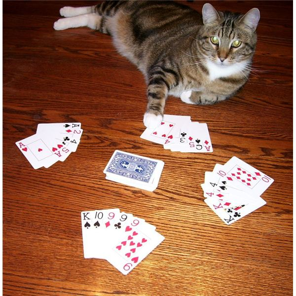

Hello young fisher. A traditional game where you go fishing for cards, 'Go Fish', is played worldwide by kids and families. It's a set collection game - collect four cards in your hand of the same rank by asking other players if they have certain cards and retrieving them from them. Then get rid of those sets and all your cards to win.
Go fish
How to play
The play consists of three parts - getting the cards together, going in turn trying to find cards, and ending the game.
Card distribution(dealing or set up).
Let someone shuffle skillfully your card deck of 52 cards(without the joker). To each player distribute a number of cards - five if there are two players and seven in the case of three to six players. There should be some left-over remaining cards. These form the draw pile and should be face down.
Gameplay
The game rotates from left to right clockwise. Begin by one player's turn. Each turn consists of the following: The player picks(chooses) any person from the other players and asks them for his/her card - a specific rank that the player asking already has. If the person has the card of the asked rank, they must give all the cards with the asked rank to the player asking. If the person doesn't have that card, let them shout "Go fish". The asking player must then draw a card from the pool. However, if it's a card that the player asked for, continue by asking another or the same person for another or the same card. The turn continues to the next person, and so on.
Objectives and victory
The objective is to get cards of the same rank or suit. Lay them out before you when you do so. Get rid of your cards first to win the game. Collect the most sets of four at the end of the game to win. The game ends when either some player or the draw-pile has ran out of cards.
Details
Number of players
Two to six players are recommended. You can play as a couple. However, it's best played with three people.
The number of players can go up to 10. If there's no cards left in the pool, you may consider using another deck or just dealing with the cards each player has. Usually, the more people the better is the game.
Recommended player ages
Young people.
Time(length of plays)
Time taken is not too long.
Who goes first
The first player going could be chosen randomly. The player could also be the one to the dealer's left.
Skills required
Honour system - you need to trust each other when deciding whether a player has a card or not that you have asked for.
Other
Probability and statistics
Mostly luck is involved.
Strategies
Ask for certain cards strategically. Memorise what you have asked.
Variations and extensions to the game
If there are more than two people playing, go until there is only one person left with cards, not after the first one has gotten all the cards.
Specific card - players get to ask for a specific card, eg: with a rank *and a suit*. You must already have one card of that *rank*. Agree whether to ask for a card you already have in your hand.
Keep playing - even when there are no longer any cards in the draw-pile, still play with each other's cards, until all cards are in sets of four.
Similar games
Uno - perhaps not so similar but in some cases you also need to ask for cards in it.